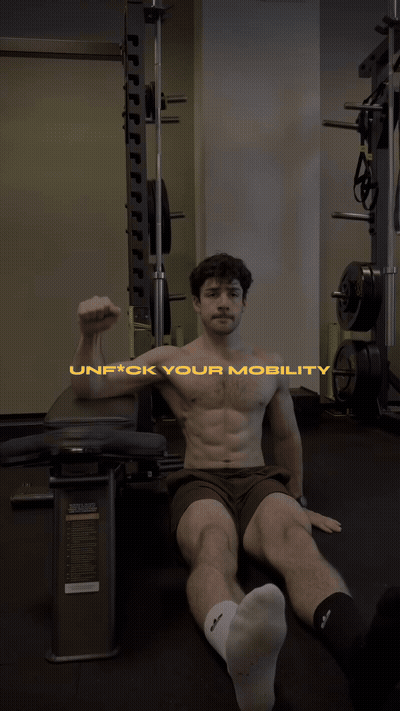
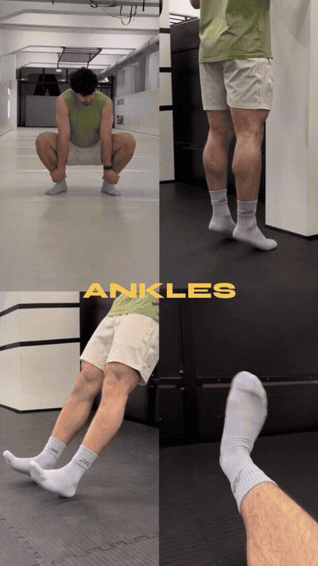
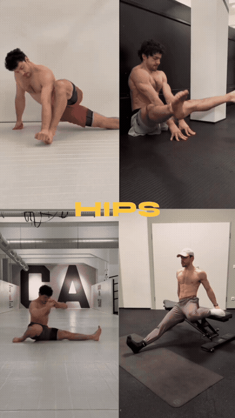
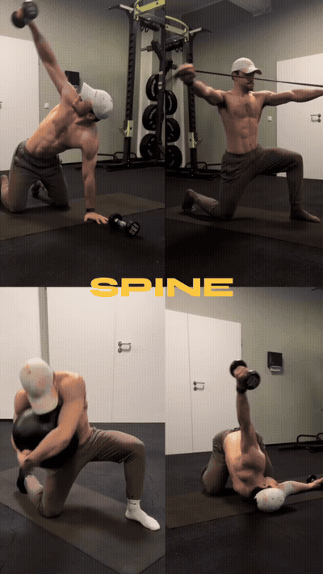
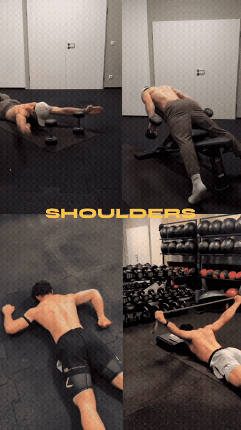

The reel opens on ankle work: a deep squat position with the feet flat to open the ankle, followed by a seated position with the foot controlled (a partner or hand can hold the foot) to work dorsiflexion range.

A squat-based ankle drill: stay in a deep squat and shift the knee side-to-side / forward and back so the ankle works through range while the hips stay low.

The centerpiece upper-back movement of the reel: lying chest-down over a flat gym bench, arms hanging with light dumbbells, raise the arms into a Y while setting the shoulder blades down and back to load the lower trap and scapular muscles.

Yellow 'spine' label: a mix of kneeling and banded positions (band around the feet or anchored, medicine-ball or torso rotations) that hold the trunk stable while the hips and mid-back work against resistance.

Closing shoulder work: dumbbell lateral raises (seated or standing) and/or a bench-supported press pattern for the front line, with the arm path controlled through the shoulder range.